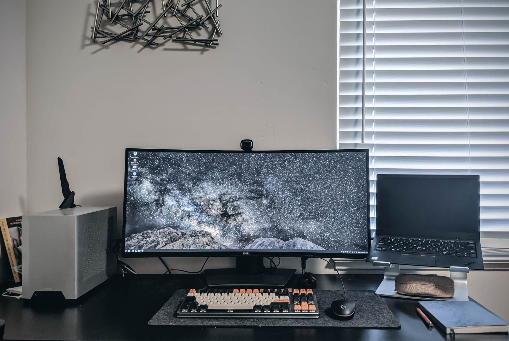

2020년도 지름 결산
여전히 매해 연말 지름보고 입니다.
- 2015년 지름결산
- 2016년 지름결산
- 2017년 지름결산
- 2018년 지름결산
-
Fitbit Charge 3
Costco에서 할인을 해서, 그동안 매번 운동할 때 궁금했던 심박수를 재 볼겸 구입했네요. 사용해 보니, 알람도 되고, 배터리도 오래가고 (최대 7일), 심박수와 만보계까지 되니 정말 좋더군요. 계단을 오르는 행동, 수영할 때 팔 스트로크까지 감지하는 게 신기합니다.
아무튼, 핏빗을 쓰니 러닝머신 달릴 때 내 한계 심박수까지 끌어 올릴 수 있어서 좋네요. 그 전엔 좀 무리해서 달려서 무릎이 좀 안좋아지는 경우가 있었는데 (나이가...) 핏빗을 쓰면서는 페이스 조절이 조금은 쉬워졌습니다. 대부분의 피트니스 밴드나 애플와치 모두 심박수 측정이 잘 되니 이게 핏빗만의 장점이라 할 수는 없겠지만, 일단 다른 피트니스밴드에 비해 저렴하니까요 :)
-
Loque Ghost S1
작년에 구입했던 Ncase M1에 이어, 새롭게 구입한 Loque Ghost S1입니다. NCase M1은 12L 정도의 아담한 사이즈의 mini-ITX 케이스인데, Loque Ghost S1은 8L 정도의 매우 작은 케이스네요. 이게 2017년에 나와서 인기 폭발이라 소량 생산되자마자 매진되는게 일상이었는데, 이번에 재고가 들어와서 낼름 구입했네요.
제가 쓸 건 아니고, 큰 아이 PC 맞추는 데 쓰려고 샀는데, 아이 컴퓨터 부품은 구닥다리에 케이스만 제 것 보다 비싼걸 쓰는군요. :)
-
Tuff Shed 8x12
기존 쉐드가 1년만에 문이 뜯어져 나가서 철거 후 방치해두길 1년 째, 드디어 비온 김에 무른 땅을 깎고 갈고 자갈을 부어서 편평하게 만든 후 설치하게 된 쉐드네요. 기존 쉐드는 사이즈가 7.5ft X 7.5ft 라서 내부에 조금만 물건을 놔두어도 좁은 감이 있었는데, 이 쉐드는 꽤 많이 들어가고도 여유가 있네요. 한쪽에 workbench도 만들 공간도 나오고, 벽에 선반도 충분히 여러 개 만들어 둘 수 있을 것 같네요.
-
Dell U3419W

기존에 데스크탑과 랩탑을 연결하기 위해 복잡한 방법을 사용하고 있었습니다. 먼저 랩탑이 USB-C를 사용하기에 USB-C Docking station을 써서 Power, DisplayPort, USB-A를 연결하고 DisplayPort와 USB-A는 KVM 에 연결합니다. 그리고 KVM은 다른 DisplayPort + USB 를 데스트탑에 연결하고 해당 전원을 추가로 연결한 후, monitor에 displayport로 연결하고 기타 장치(키보드, 마우스, 웹캠)를 모두 연결합니다.
다 연결해 보면 정말 책상이 케이블로 난장판이 되죠. 이걸 어떻게 해결해 볼 수 없을까 하고 고민하고 검색해 본 끝에 결정한 모니터입니다. KVM이 모니터에 내장되어 있어서 자질구레한 장치 (USB-C Dock, KVM)가 필요가 없어져서 책상이 매우 깔끔해졌네요.
다만 처음에 받은 제품은 USB-C로 랩탑에 연결하고 DisplayPort로 데스크탑에 연결해서 사용할 경우 간헐적으로 화면이 블랙아웃 되는 현상이 있었네요. 다시 Input Source를 선택해주면 화면이 돌아오긴 하지만, 회의중 이러면 꽤 난감하더군요. 랩탑과 데스크탑 모두 켜져있을 때에 그런것으로 봐서 아무래도 랩탑이 전력을 끌어다 쓸 때 문제가 가끔 생기는 것 같네요. U3419W는 90W까지 충전이 가능하고 랩탑은 65W 사용이라 문제가 없을 것 같긴 한데, 이것때문에 교환을 받았습니다.
찾아보니, 양쪽 시스템 모두 사용시 사용하지 않는 시스템이 Idle에서 시간이 지나 화면이 꺼지는 경우 사용중이 화면도 꺼지는 증상이더군요. 비단 U3419W에서만 발생하는 것이 아니라, U3818DW에서도 발생하는 증상인데, 내장된 KVM에 조금 문제가 있는 듯 합니다. USB-C (90W PD)에 4x USB-A ports 제품이 이 녀석밖에 없어서 어떻게든 사용하고 싶은데, 이 부분을 델이 고쳐줄 지 모르겠네요.
엔지니어와 몇달을 씨름 끝에 알아낸 건 Auto Input Detect를 켜 두면 증상이 발생하더군요. 그런데 문제는 이것을 끄면, 랩탑을 절전모드에 들어가게 하더라도 계속 다시 켜지게 됩니다. 어떻게든 불편함은 생길 수 밖에 없네요.
-
Nest Outdoor Camera
네스트 카메라 딜이 떠서 두개에 230달러길래 냉큼 질렀습니다. 인터넷도 AT&T 1Gbps 무제한으로 변경한 터라 데이터 제한이 없어서 트래픽은 생각하지 않고 구매했습니다. 기존에 앞마당, 뒷마당 감시용으로 쓰던 제품은 Arlo인데 이녀석은 불편한 점이, 너무 느린 속도였습니다. 앱을 어떻게 만들었는지 몰라도, 알람이 뜨고 앱을 켜서 영상을 확인하는 데 30초는 걸리는 것 같더군요.
네스트는 Hello 도어벨을 쓰고 있었는데 빠릿한 반응속도가 무척 마음에 들었습니다. 그래서 이참에 설치하기로 한거죠. 상시전원이 필요하다는 점은 조금 불편하지만 나머진 만족합니다. 이벤트 녹화만 되어서 알로같이 이벤트가 잘 감지되지 않으면 어쩌나 했는데, 생각보다 훨씬 많이 잡아내주더군요. 그중에 필요한 것만 (좀 큰 이벤트라 생각되는 것만) 알림으로 날아와서 노티피케이션 폭탄은 없었습니다.
-
Unihedron SQM-L
이사를 오고 난 이후 항상 밤하늘을 볼 때면, 예전 살던 렌트하우스보다 하늘이 밝게 느껴졌습니다. 분명 예전 집 보다 더 외곽쪽이라 하늘이 어둡게 보여야 하는데 좀 이상했습니다. 아무래도 집 주변에 가로등이 좀 많아서 그런 것 같더군요. 그것을 제대로 알아낼 방법이 없다보니 그냥 그러려니 하길 3년째. 이번에 하늘의 밝기를 제대로 측정할 수 있는 Sky Quality Meter (SQM)를 구입했습니다. 정말 단순하게, 특정 각도 내로 들어오는 광자의 수를 세어서 수치화하는 장치라 별다른 건 없고, 구입하고 나니 집 뒷마당에서 남쪽 방향만 좀 괜찮고 나머진 하늘이 엉망이네요. 그래도 새벽 1시 이후에 보면 별 좀 보일 것 같아서 다시 별 관측 의욕이 생깁니다.
-
CAD U3 Condensor Mic
회사에서 랩탑으로 회의를 하는데, 화상 웹캠을 사용하지 않으면 상대방이 제 목소리가 너무 작게 들린다고 하더군요. 화상캠은 집에 여분이 없어서 아이들과 돌아가서 사용하고 있었습니다. 코로나 바이러스로 WFH이 일상이 되면서 아마존에서나 어느 웹사이트에서도 웹캠을 찾아보기가 힘들게 되었죠. 그래서 Jabra 75T Elite 헤드셋을 장만 했는데, 이것 또한 리눅스 랩탑에 연결되면 여전히 목소리가 작게 들리는 것 같더군요.
임시방편으로 스마트폰으로 회의에 참가하고, 슬라이드 공유를 위해서 랩탑에는 무음으로 회의에 참석하고 있었는데, 여간 불편한게 아니였습니다.
좀 더 생각해 보고는, 웹캠을 포기하고 들인 것이 이 CAD U3 콘덴서 마이크입니다. USB interface로 PC에 연결되니 웹캠에 달린 마이크나 차이 없을 것 같았고, 전문적인 마이크이다 보니, 음질은 더 좋을 것으로 생각되어, 35달러 딜에 덥썩 물었죠.
도착해서 사용해 보니 확실히 선명하게 잘 들린다고 하여 만족합니다. 팟캐스트를 할 건 아니니 상대방이 선명하게 잘 들리면 그걸로 된거죠. 그런데 Blue Yeti X Pro가 계속 눈에 들어옵니다...
-
Allsteel Acuity
회사에서 재택근무를 하는 데 도움이 되라고 가구 구입 비용을 지원해 주었습니다. 무엇을 살까 고민을 하다, 예전에 거의 사기를 당하는 수준으로 잘못 구매한 (다시 생각하니 또 열받네요) Steelcase Leap V2 (사실은 V1 버전을 받았음...)를 치워버리고 의자를 새로 바꿨네요. 새건 아니고 Liquidation 가구점에서 중고로 구입했습니다. 처음 사려고 했던 건 Herman Miller Aeron 이었는데 중간 사이즈가 다 나가버려서 나머지 중에 고민하고 구입했습니다.
일단 편합니다. Steelcase Leap V2 (아니 V1. 또 열받네요) 만큼 편한 건 아니지만 등받이가 메쉬로 되어있어 통풍은 잘 되네요. 장시간 앉아있어도 불편한 것은 없습니다. 다른 의자들과는 다르게 상하 조절, 앞뒤 조절 등이 버튼 스타일로 되어 있어서 꽤 깔끔합니다.
다만 뒤로 젖혀지는 각도가 조금밖에 되질 않아 편하게 뒤로 기대어 쉬는 건 안되고, 젖힌상태에서 고정할 수 없어서 좀 아쉽습니다.
-
Jarvis Bamboo Standing desk by Fully
지원금으로 더 구입한 게 상하 높이 조절되는 스탠딩책상입니다. 이것도 Liquidation에서 구입할 까 하다가, 그래도 모터 부분이 고장이 나는 경우가 있다고 하기에 신품으로 구입했네요. 유명한 Standing Desk 브랜드는 Uplift, Autonomous.ai, Fully 정도가 있는데 이 중에 Fully로 구입했습니다. Hardwood 는 비싸서 살 수없었고 대나무를 붙인, 뭐 MDF 수준의 상판으로 구입했는데도 700불 정도가 나오네요.
가장 저렴한 것은 Autonomous.ai 책상이고, Jarvis가 중간 정도, Uplift는 거의 천불을 넘기는 수준입니다. 그보다 더 비싼 책상도 많긴 한데 그닥 큰 차이점이 안보이더군요.
큰 기대는 하지 않았는데, 책상이 흔들림이 거의 없어서 만족합니다.
-
Amazon Monitor Arm
책상을 바꾸고 나니 모니터 밑을 좀 깔끔하게 하고 싶어 모니터 암을 구입했습니다. 코로나 바이러스 사태 이전엔 99불 하던 녀석이 많이 올라서 120불이더군요. 그래도 설치하고 나니 34인치 모니터도 잘 버텨주고 생각보단 괜찮습니다.
회사에서 사용하던 모니터암은 뒤로 젖히는 각도가 거의 없는데 이 녀석은 뒤로 충분히 뺄 수 있어서 더 나은 듯 합니다 (가격은 반도 안됨)
-
벼르고 벼르던 어드벤쳐 모터사이클을 샀습니다. 기존에 탔던 본네빌을 팔고 5년 반이 지나서 다시 모터사이클을 타게 되네요. 어드벤쳐라 시트고도 880mm로 무척 높은 데 거기에다 제 몸무게가 가벼워서 뒷쪽 서스펜션이 충분히 내려가질 않네요. 스프링을 바꾸던 지 아니면 바이크에 무게를 늘리던지 해야 할 것 같습니다.
-
Alpinestars Tech 7 Enduro Drystar
안전한 장비만 쓰자고, 오토바이 사면서 다짐을 해서, 이번에는 짧은 부츠는 보지도 않고 장부츠만 봤습니다. 그 중에 어드벤쳐 스타일 보다는, 오프로드 위주로 탈 예정이라 오프로드 용 부츠로 샀습니다.
작년까지는 Tech 7 Enduro만 있었는데 올해 방수까지 되는 Enduro Drystar가 나왔더군요.
-
Shoei Hornet ADV
요상하게 생긴 두상때문에 미국 헬멧은 잘 맞질 않아 한국에서 공수한 어드벤쳐 헬멧입니다. 무겁긴 한데 안전하고 듀얼퍼포즈로 쓸 수 있는 녀석이라 골랐는데 만족합니다. 기존에 쓰던 쇼에이 퀘스트는 그냥 장식용으로 놔둬야 겠네요.
-
Protections
- Leatt Hip Protector
- Leatt Knee Guard: Knee braces는 너무 비싸서 일단 무릎보호대로 갔습니다. 이걸로 위험하다 싶으면 Knee Braces로 가야죠. 일단은 예전에 쓰던 다이네즈 무릎보호대보다 저에게 잘 맞아서 좋네요.
- Leatt GPX 5.5 Neck Brace
- Alpinestars Action Bionic Protector: 최상급 Leatt 5.5 Body Protector 갈까 하다가, 당분간은 오프로드라고 해봤자 흙길 위주일거라 비싼거 말고 중간급으로 장만했습니다. 실력 좋아지면 Leatt 5.5 로 가야죠.
-
Revit Sand 3 Gloves
-
Leatt Legion Offroad Pants
처음에 Revit Sand 3 바지를 샀다가 30인치 허리가 저에겐 너무 커서 환불하고 겨우 찾은 28인치 바지인데, 딱 맞고 정말 좋습니다. :)
-
Blue Yeticaster, Samson Go Mic
아이들이 개학하고 난 후, COVID-19 때문에 학교에도 못가고 집에서 온라인 수업만 하게 되었습니다. 그래서 좀 더 나은 환경을 만들고자 아이들에게 각각 적당한 콘덴서 마이크를 하나씩 장만해 주었죠. 기존에 쓰던 CAD U3와 작은 Samson Go를 아이들에게 주고 벼르고 있던 Blue Yeticaster를 샀습니다.
일단 새로 산 Samson Go. 정말 작아요. 작은데, 잡아내는 소리는 깔끔합니다. 일반 노트북에 있는 마이크와는 품질 자체가 확연히 차이납니다. 게다가 아이들 노트북이 크롬북 저가형이다보니 마이크 품질이 더 안좋은 데, 마이크를 달고 나니 선생님이 잘 안들린다고 하는 말이 쏙 들어갔다네요 (믿거나 말거나)
Yeticaster는 Blue Yeti 마이크에 스탠드 암과 충격 완화 마운트가 동봉된 녀석인 데, 사실 그것 빼면 Blue Yeti와 똑같습니다. 거의 스탠드 때문에 산 녀석입니다. 제가 뭐 음악 녹음할 것도 아니고 고 퀄리티 마이크가 필요한 것도 아닌데, 그냥 쓰는김에 좋은 거 쓰고싶은 마음에...
게인(감도)을 조절하는 다이얼이 있고, 카디오 패턴, 옴니 패턴 스테레오, 양방향 패턴이 있어서 선택적으로 쓸 수 있지만, 혼자서 화상회의 때 쓰기엔 카디오 패턴 하나면 충분한 것 같습니다. 다만 Blue Yeti X같이 레벨이 LED로 나오진 않으니, 제 목소리가 잘 잡히는지 아닌 지 궁금하긴 하더군요. 이건 Window에서 Voicemeeter 앱 설치해서 확인하고 있습니다.
-
Mosko Moto Backcountry Panniers + Outback Motortek Pannier Rack
오토바이에 쓸 가방을 알루미늄 가방을 쓸 지, 천 가방을 쓸지 고민하다가, '그래도 오프로드엔 천 가방이지!' 생각에 주문 한 모스코 모토의 백컨트리 가방입니다.
일단, 정말 튼튼하게 만들어져있고, 천 가방치고는 매우 무거운 편입니다. Pannier Rack에 연결되는 방식이 간편하게 되어 있어서 넣고 빼기 편합니다. 외부가 Molle 시스템으로 되어있어서, 지원하는 악세서리를 구지 모스코모토에서 찾지 않아도 됩니다.
아직 장거리를 가보진 않아서 짐이 얼마나 들어가는 지 모르겠지만, 35L x2, 총 70L 부피라 여행에 충분 해 보입니다. 테스트로 몇개 여행 용품 넣어봤는 데 정말 많이 들어가더군요.
이 가방을 매달 수 있게 오토바이에 아웃백 모터텍의 패니어랙을 설치했습니다. 다른 몇개의 패니어랙이 있는데 아웃백이 제가 알기론 유일하게 왼쪽 오른쪽 길이가 같습니다. 다른 패니어랙은 왼쪽 패니어 랙이 머플러가 없어서 바이크에 더 가깝게 붙어있습니다. 그래서 이런 랙을 쓰는 오토바이는 왼쪽은 큰 부피의 패니어 랙 (35L), 오른쪽은 작은 부피의 패니어 랙 (25L)을 써서 양쪽을 비슷하게 만들죠.
그러나 저는 양쪽 길이를 같게 해서 왼쪽 패니어 안쪽에 Rotopax Water Jug를 달 생각이었습니다. 아직 설치해 보진 않아서 1갤런 물통이 들어갈 지는 잘 모르겠네요. (유투브 영상 하나를 보면 들어갈 것 같긴 합니다)
-
Garmin Zumo XT (GPS)
바이크에 달 네비게이션 중 두개를 고민했었습니다. 하나는 오프로드에 특화된 [Trail Tech Voyager Pro][ext:trailtech-voyagerpro]와, 다른 하나는 제가 구입한 Garmin Zumo XT 입니다.
결론은 가민을 구입했습니다. 일단 Voyager Pro가 할 수 있는 대부분의 것을 Zumo도 할 수 있다는 게 가장 컸습니다. Backcountry Discovery Route를 하기 위해선 보통 GPX 파일을 이용해서 길을 찾는데, 이건 Voyager Pro나 Zumo XT 모두 가능합니다. Voyager Pro가 오프로드 트레일이 잘 나와 있다고 하는데, Zumo도 왠만한 것은 다 들어가 있더군요.
Voyager Pro가 좀 더 나은 부분은, 바이크의 시스템에 추가로 센서를 달아서, 속도, 타코미터등을 측정해서 보여줄 수 있다는 점인데, 이건 제가 타고있는 790 에는 관련이 없고, 계기판이 없는 오프로드용 바이크에 유용하더군요. 그래서 화면 큰 Zumo XT로 갔습니다.
화면도 크고 터치도 장갑 착용하고 가능하고, 매우 만족합니다. 겨울이라 많이 테스트를 못했는데 어서 봄이와서 많이 더 테스트 하면 좋겠습니다.
올해 지름은 WFH을 위한 것이거나 아니면 모터사이클 장비 위주네요. COVID 덕분에 정말 지를 게 제한이 되어버린 한 해였습니다.